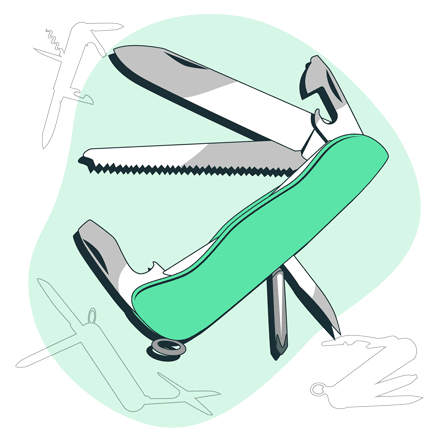

Бизнес-кейс –
швейцарский нож для HR

Бизнес-кейс (case study) – это современный и эффективный метод оценки и развития компетенций, в основе которого лежит специальное аналитическое задание. Процедура оценки с применением бизнес-кейса носит название кейс-тестинг.
Как правило, бизнес-кейс представляет собой описание рабочей ситуации в виде корпоративного отчета, набора документов или презентации. Помимо контекста и числовых данных, в кейс обязательно должна быть заложена проблема или задача, которую участнику необходимо решить с учетом имеющейся информации.
Решение кейса может быть полностью индивидуальным или включать этап коллективной работы (например, групповое обсуждение решения и подготовка презентации).
С помощью бизнес-кейса можно оценить широкий набор компетенций: принятие решений, планирование, общие аналитические способности, владение инструментами бизнес-анализа, а также навыки командной работы.
Помимо оценки, бизнес-кейсы могут использоваться в качестве инструмента развития сотрудников.
Решение аналитических заданий с последующим разбором результатов и допущенных ошибок позволяет сотрудникам в тренировочных условиях получить новые знания и навыки, которые пригодятся при решении реальных рабочих задач.
В бизнес-кейсе должна содержаться необходимая и достаточная информация для анализа
Сферы применения бизнес-кейсов в организации:
-
отбор внешних или внутренних кандидатов;
-
регулярная оценка сотрудников;
-
внутреннее обучение и составление ИПР.
На этапе подбора бизнес-кейсы могут использоваться в качестве барьерометрии, «отсеивая» неподходящих кандидатов. Это существенно снижает нагрузку на HR-департамент и сокращает затраты на подбор. На интервью проходят только те кандидаты, которые обладают требуемым уровнем развития ключевых компетенций.
Кейс-тестинг является эффективным методом первичной диагностики кандидатов
В последние годы кейс-тестинг широко применяется в онлайн-формате, когда кандидаты проходят оценку дистанционно. При этом важно периодически обновлять задания бизнес-кейсов. В сети существует большое количество ресурсов, которые предлагают кандидатам купить правильные ответы к уже известным кейсам.
Регулярная оценка сотрудников, как правило, проводится на ежегодной основе. В рамках данной процедуры оценивается результативность работы (производственные показатели), а также уровень развития компетенций персонала.
Кейс-тестинг позволяет сократить затраты на регулярную оценку при высоком качестве результатов
Проведение ассессмент-центра для регулярной оценки персонала не всегда оправдано, так как помимо существенных финансовых и организационных затрат, требует отвлечения сотрудников от работы на продолжительное время.
Кейс-тестинг является достойной альтернативой полноценному ассессмент-центру и позволяет сфокусироваться на диагностике наиболее значимых профессиональных и деловых качеств сотрудников. При этом решение бизнес-кейса обычно занимает 1,5-2 часа.
Все больше компаний используют бизнес-кейсы не только для оценки, но и в качестве инструмента развития. Командное решение кейса способствует продуктивному обмену мнениями среди сотрудников. Помимо этого, обсуждение кейса позволяет сотрудникам проанализировать собственные ошибки и освоить новые подходы к решению рабочих задач.
С помощью бизнес-кейса можно не только оценивать, но и развивать компетенции сотрудников
Для того, чтобы сотрудники извлекли максимум пользы в процессе работы над кейсом, необходима поддержка эксперта. При этом важно не давать участникам готовое решение, а помочь группе самостоятельно прийти к нужным выводам.
В качестве эксперта может выступать один из руководителей или сотрудников HR, который владеет материалом кейса, а также навыками модерации групповой работы.
Результаты кейс-тестинга могут стать основой для составления индивидуального плана развития. Для этого следует выяснить у сотрудника, каких знаний и навыков ему не хватало при работе над заданием и выбрать подходящие методы развития.
Автор материала: Беспалов Игорь Александрович ©
Разработка бизнес-кейсов – ответственная и кропотливая работа. Мы обязательно расскажем о технологии создания аналитических заданий в наших будущих статьях. Желающим уже сейчас освоить данную технологию мы рекомендуем наш обучающий курс по передаче технологии ассессмент-центра. В рамках данного курса целый раздел посвящен разработке бизнес-кейсов.
Воспользуйтесь нашими готовыми ассессментами, в которых представлены профессионально разработанные бизнес-кейсы. Мы всегда рады помочь нашим клиентам и покупателям при возникновении вопросов. В течение 6 месяцев после приобретения наших материалов консультации предоставляются бесплатно.
Вы можете заказать разработку бизнес-кейса специально для вашей организации и задачи или выбрать уже готовые решения нашего HR-маркета:

наверх
наверх ▲